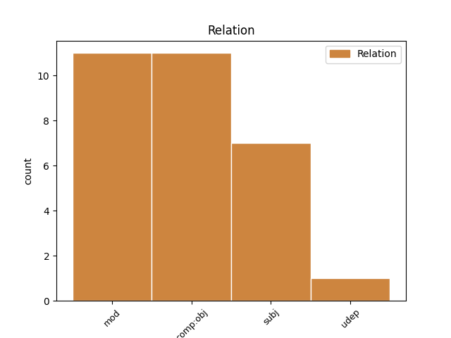
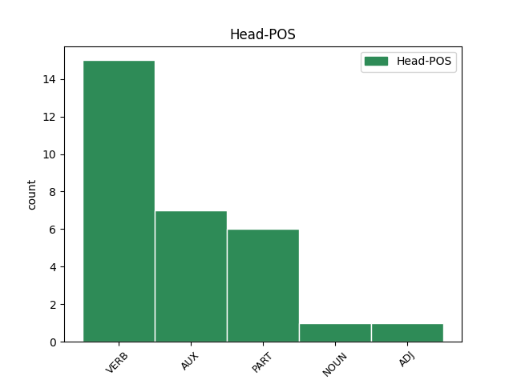
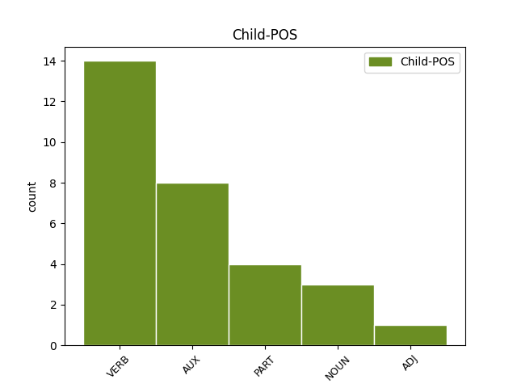

Distribution of features within this leaf



Agreement Rules sorted by frequency.
- When the dependent token is the modifer(mod) of the head token, and the head token is VERB and the dependent token is VERB.
1 அப்போதுதான் _ _ _ _ 0 _ _ _
2 ஒருமித்த _ _ _ _ 0 _ _ _
3 கருத்தை _ _ _ _ 0 _ _ _
4 எட்டுவதற்கு எட்டு VERB VzDF3SNAA Case=Dat|Gender=Neut|Number=Sing|Person=3|Polarity=Pos|Tense=Fut|VerbForm=Ger|Voice=Act 7 mod _ LTranslit=eṭṭu|Translit=eṭṭuvatarku
5 வசதிய் _ _ _ _ 0 _ _ _
6 ஆக _ _ _ _ 0 _ _ _
7 இருக்கும் இரு VERB Vr-F3SNAA Gender=Neut|Mood=Ind|Number=Sing|Person=3|Polarity=Pos|Tense=Fut|VerbForm=Fin|Voice=Act 0 _ _ _
8 என்று _ _ _ _ 0 _ _ _
9 அவர் _ _ _ _ 0 _ _ _
10 மேலும் _ _ _ _ 0 _ _ _
11 கூறினார் _ _ _ _ 0 _ _ _
12 . _ _ _ _ 0 _ _ _
1 பிரச்னை _ _ _ _ 0 _ _ _
2 பெரித் _ _ _ _ 0 _ _ _
3 ஆகியதால் ஆகு VERB VzID3SNAA Case=Ins|Gender=Neut|Number=Sing|Person=3|Polarity=Pos|Tense=Past|VerbForm=Ger|Voice=Act 6 mod _ LTranslit=āku|Translit=ākiyatāl
4 நான் _ _ _ _ 0 _ _ _
5 பயந்து _ _ _ _ 0 _ _ _
6 போனேன் போ AUX VR-D1SAAA Animacy=Anim|Gender=Com|Mood=Ind|Number=Sing|Person=1|Polarity=Pos|Tense=Past|VerbForm=Fin|Voice=Act 0 _ _ _
7 . _ _ _ _ 0 _ _ _
1 ஆனால் _ _ _ _ 0 _ _ _
2 , _ _ _ _ 0 _ _ _
3 இந்த _ _ _ _ 0 _ _ _
4 அமைப்பு _ _ _ _ 0 _ _ _
5 உருவாவதற்கு _ _ _ _ 0 _ _ _
6 முன்பு _ _ _ _ 0 _ _ _
7 அப் _ _ _ _ 0 _ _ _
8 பகுதியில் _ _ _ _ 0 _ _ _
9 வாழ்ந்தவர்கள் வாழ் NOUN NPND3PH-A Case=Nom|Gender=Com|Number=Plur|Person=3|Polarity=Pos|Polite=Form|Tense=Past|VerbForm=Part 12 subj _ LTranslit=vāl|Translit=vālntavarkaḷ
10 தான் _ _ _ _ 0 _ _ _
11 பாதுகாத்து _ _ _ _ 0 _ _ _
12 வந்தனர் வா AUX VR-D3PHAA Gender=Com|Mood=Ind|Number=Plur|Person=3|Polarity=Pos|Polite=Form|Tense=Past|VerbForm=Fin|Voice=Act 0 _ _ _
13 . _ _ _ _ 0 _ _ _
1 அமெரிக்காவின் _ _ _ _ 0 _ _ _
2 பாதுகாப்புக்கு _ _ _ _ 0 _ _ _
3 இது _ _ _ _ 0 _ _ _
4 முக்கியம் _ _ _ _ 0 _ _ _
5 என்பதால் என் PART TzIF3SN-A Case=Ins|Gender=Neut|Number=Sing|Person=3|Polarity=Pos|Tense=Fut|VerbForm=Ger 9 udep _ LTranslit=en|Translit=enpatāl
6 அதற்கான _ _ _ _ 0 _ _ _
7 பணிகள் _ _ _ _ 0 _ _ _
8 தொடர்ந்து _ _ _ _ 0 _ _ _
9 நடைபெறும் நடைபெறு VERB Vr-F3SNAA Gender=Neut|Mood=Ind|Number=Sing|Person=3|Polarity=Pos|Tense=Fut|VerbForm=Fin|Voice=Act 0 _ _ _
10 . _ _ _ _ 0 _ _ _
1 ராஜபட்சவ் _ _ _ _ 0 _ _ _
2 உம் _ _ _ _ 0 _ _ _
3 சிங்கள _ _ _ _ 0 _ _ _
4 அரச் _ _ _ _ 0 _ _ _
5 உம் _ _ _ _ 0 _ _ _
6 போர் _ _ _ _ 0 _ _ _
7 மரபுகளை _ _ _ _ 0 _ _ _
8 மீறி _ _ _ _ 0 _ _ _
9 மனிதநேயம் _ _ _ _ 0 _ _ _
10 அற்ற _ _ _ _ 0 _ _ _
11 முறையில் _ _ _ _ 0 _ _ _
12 போர்க் _ _ _ _ 0 _ _ _
13 குற்றம் _ _ _ _ 0 _ _ _
14 இழைத்த் _ _ _ _ 0 _ _ _
15 உள்ளனர் _ _ _ _ 0 _ _ _
16 என்று _ _ _ _ 0 _ _ _
17 ஜனநாயகத்தின் _ _ _ _ 0 _ _ _
18 மீது _ _ _ _ 0 _ _ _
19 நம்பிக்கை _ _ _ _ 0 _ _ _
20 உள்ள _ _ _ _ 0 _ _ _
21 சர்வதேச _ _ _ _ 0 _ _ _
22 நாடுகள் _ _ _ _ 0 _ _ _
23 கண்டித்து _ _ _ _ 0 _ _ _
24 வருகிற _ _ _ _ 0 _ _ _
25 நிலையில் _ _ _ _ 0 _ _ _
26 , _ _ _ _ 0 _ _ _
27 மத்திய _ _ _ _ 0 _ _ _
28 அரசு _ _ _ _ 0 _ _ _
29 அதற்கு _ _ _ _ 0 _ _ _
30 நேர்மாறாக _ _ _ _ 0 _ _ _
31 ஒரு _ _ _ _ 0 _ _ _
32 போர்க் _ _ _ _ 0 _ _ _
33 குற்றவாளிக்கு _ _ _ _ 0 _ _ _
34 சிவப்புக் _ _ _ _ 0 _ _ _
35 கம்பளம் _ _ _ _ 0 _ _ _
36 விரிப்பது விரி AUX VzNF3SNAA Case=Nom|Gender=Neut|Number=Sing|Person=3|Polarity=Pos|Tense=Fut|VerbForm=Ger|Voice=Act 45 subj _ LTranslit=viri|Translit=virippatu
37 அத்தகைய _ _ _ _ 0 _ _ _
38 போர்க் _ _ _ _ 0 _ _ _
39 குற்றத்தில் _ _ _ _ 0 _ _ _
40 மத்திய _ _ _ _ 0 _ _ _
41 அரசின் _ _ _ _ 0 _ _ _
42 பங்களிப்பு _ _ _ _ 0 _ _ _
43 எத்தகையது _ _ _ _ 0 _ _ _
44 என்பதை _ _ _ _ 0 _ _ _
45 உறுதிப்படுத்துவத் உறுதிப்படுத்து VERB VzNF3SNAA Case=Nom|Gender=Neut|Number=Sing|Person=3|Polarity=Pos|Tense=Fut|VerbForm=Ger|Voice=Act 0 _ _ _
46 ஆக _ _ _ _ 0 _ _ _
47 உள்ளது _ _ _ _ 0 _ _ _
48 . _ _ _ _ 0 _ _ _
1 ராஜபட்சவ் _ _ _ _ 0 _ _ _
2 உம் _ _ _ _ 0 _ _ _
3 சிங்கள _ _ _ _ 0 _ _ _
4 அரச் _ _ _ _ 0 _ _ _
5 உம் _ _ _ _ 0 _ _ _
6 போர் _ _ _ _ 0 _ _ _
7 மரபுகளை _ _ _ _ 0 _ _ _
8 மீறி _ _ _ _ 0 _ _ _
9 மனிதநேயம் _ _ _ _ 0 _ _ _
10 அற்ற _ _ _ _ 0 _ _ _
11 முறையில் _ _ _ _ 0 _ _ _
12 போர்க் _ _ _ _ 0 _ _ _
13 குற்றம் _ _ _ _ 0 _ _ _
14 இழைத்த் _ _ _ _ 0 _ _ _
15 உள்ளனர் _ _ _ _ 0 _ _ _
16 என்று _ _ _ _ 0 _ _ _
17 ஜனநாயகத்தின் _ _ _ _ 0 _ _ _
18 மீது _ _ _ _ 0 _ _ _
19 நம்பிக்கை _ _ _ _ 0 _ _ _
20 உள்ள _ _ _ _ 0 _ _ _
21 சர்வதேச _ _ _ _ 0 _ _ _
22 நாடுகள் _ _ _ _ 0 _ _ _
23 கண்டித்து _ _ _ _ 0 _ _ _
24 வருகிற _ _ _ _ 0 _ _ _
25 நிலையில் _ _ _ _ 0 _ _ _
26 , _ _ _ _ 0 _ _ _
27 மத்திய _ _ _ _ 0 _ _ _
28 அரசு _ _ _ _ 0 _ _ _
29 அதற்கு _ _ _ _ 0 _ _ _
30 நேர்மாறாக _ _ _ _ 0 _ _ _
31 ஒரு _ _ _ _ 0 _ _ _
32 போர்க் _ _ _ _ 0 _ _ _
33 குற்றவாளிக்கு _ _ _ _ 0 _ _ _
34 சிவப்புக் _ _ _ _ 0 _ _ _
35 கம்பளம் _ _ _ _ 0 _ _ _
36 விரிப்பது _ _ _ _ 0 _ _ _
37 அத்தகைய _ _ _ _ 0 _ _ _
38 போர்க் _ _ _ _ 0 _ _ _
39 குற்றத்தில் _ _ _ _ 0 _ _ _
40 மத்திய _ _ _ _ 0 _ _ _
41 அரசின் _ _ _ _ 0 _ _ _
42 பங்களிப்பு _ _ _ _ 0 _ _ _
43 எத்தகையது _ _ _ _ 0 _ _ _
44 என்பதை என் PART TzAF3SN-A Case=Acc|Gender=Neut|Number=Sing|Person=3|Polarity=Pos|Tense=Fut|VerbForm=Ger 45 comp:obj _ LTranslit=en|Translit=enpatai
45 உறுதிப்படுத்துவத் உறுதிப்படுத்து VERB VzNF3SNAA Case=Nom|Gender=Neut|Number=Sing|Person=3|Polarity=Pos|Tense=Fut|VerbForm=Ger|Voice=Act 0 _ _ _
46 ஆக _ _ _ _ 0 _ _ _
47 உள்ளது _ _ _ _ 0 _ _ _
48 . _ _ _ _ 0 _ _ _
1 ஜெர்மனி _ _ _ _ 0 _ _ _
2 வெற்றி _ _ _ _ 0 _ _ _
3 பெற்றால் _ _ _ _ 0 _ _ _
4 ஜி-4 _ _ _ _ 0 _ _ _
5 நாடுகள் _ _ _ _ 0 _ _ _
6 ( _ _ _ _ 0 _ _ _
7 இந்தியா _ _ _ _ 0 _ _ _
8 , _ _ _ _ 0 _ _ _
9 பிரேஸில் _ _ _ _ 0 _ _ _
10 , _ _ _ _ 0 _ _ _
11 ஜப்பான் _ _ _ _ 0 _ _ _
12 , _ _ _ _ 0 _ _ _
13 ஜெர்மனி _ _ _ _ 0 _ _ _
14 ) _ _ _ _ 0 _ _ _
15 அனைத்தும் _ _ _ _ 0 _ _ _
16 பாதுகாப்புக் _ _ _ _ 0 _ _ _
17 கவுன்சிலில் _ _ _ _ 0 _ _ _
18 இடம்பெற்று _ _ _ _ 0 _ _ _
19 விட்டன விடு AUX VR-D3PNAA Gender=Neut|Mood=Ind|Number=Plur|Person=3|Polarity=Pos|Tense=Past|VerbForm=Fin|Voice=Act 20 comp:obj _ LTranslit=viṭu|Translit=viṭṭana
20 என்ற என் PART Td-D----A Polarity=Pos|Tense=Past|VerbForm=Part 0 _ _ _
21 பெருமை _ _ _ _ 0 _ _ _
22 கிடைக்கும் _ _ _ _ 0 _ _ _
23 . _ _ _ _ 0 _ _ _
1 இதனால் _ _ _ _ 0 _ _ _
2 சென்னையில் _ _ _ _ 0 _ _ _
3 வசிக்கும் வசி ADJ Jd-F----A Polarity=Pos|Tense=Fut|VerbForm=Part 5 mod _ LTranslit=vaci|Translit=vacikkum
4 தென்மாவட்டங்களைச் _ _ _ _ 0 _ _ _
5 சேர்ந்தவர்கள் சேர் NOUN NPNF3PH-A Case=Nom|Gender=Com|Number=Plur|Person=3|Polarity=Pos|Polite=Form|Tense=Fut|VerbForm=Part 0 _ _ _
6 ஜனவரி _ _ _ _ 0 _ _ _
7 12-ம் _ _ _ _ 0 _ _ _
8 தேதியன்றே _ _ _ _ 0 _ _ _
9 சொந்த _ _ _ _ 0 _ _ _
10 ஊர்களுக்குச் _ _ _ _ 0 _ _ _
11 செல்வதற்க் _ _ _ _ 0 _ _ _
12 ஆக _ _ _ _ 0 _ _ _
13 ரயில்களில் _ _ _ _ 0 _ _ _
14 முன்பதிவு _ _ _ _ 0 _ _ _
15 செய்யக் _ _ _ _ 0 _ _ _
16 காத்திருந்தனர் _ _ _ _ 0 _ _ _
17 . _ _ _ _ 0 _ _ _
1 அந்தப் _ _ _ _ 0 _ _ _
2 பணியை _ _ _ _ 0 _ _ _
3 மனித _ _ _ _ 0 _ _ _
4 நேய _ _ _ _ 0 _ _ _
5 மனப்பான்மையோடு _ _ _ _ 0 _ _ _
6 நாம் _ _ _ _ 0 _ _ _
7 நிறைவேற்றுவோம் _ _ _ _ 0 _ _ _
8 என்ற _ _ _ _ 0 _ _ _
9 அந்த _ _ _ _ 0 _ _ _
10 உணர்வைப் _ _ _ _ 0 _ _ _
11 பெற்று _ _ _ _ 0 _ _ _
12 மக்களைக் _ _ _ _ 0 _ _ _
13 காப்பாற்ற _ _ _ _ 0 _ _ _
14 வேண்டும் வேண்டு AUX VR-F3SNAA Gender=Neut|Mood=Ind|Number=Sing|Person=3|Polarity=Pos|Tense=Fut|VerbForm=Fin|Voice=Act 18 mod _ LTranslit=vēṇṭu|Translit=vēṇṭum
15 - _ _ _ _ 0 _ _ _
16 மக்களுக்குப் _ _ _ _ 0 _ _ _
17 பணியாற்ற _ _ _ _ 0 _ _ _
18 வேண்டும் வேண்டு AUX VR-F3SNAA Gender=Neut|Mood=Ind|Number=Sing|Person=3|Polarity=Pos|Tense=Fut|VerbForm=Fin|Voice=Act 0 _ _ _
19 . _ _ _ _ 0 _ _ _
Disagree Examples:
1 இத் _ _ _ _ 0 _ _ _
2 ஏ _ _ _ _ 0 _ _ _
3 சர்வேயில் _ _ _ _ 0 _ _ _
4 , _ _ _ _ 0 _ _ _
5 ’ _ _ _ _ 0 _ _ _
6 அதிகம் _ _ _ _ 0 _ _ _
7 நேசிக்கப் _ _ _ _ 0 _ _ _
8 படும் _ _ _ _ 0 _ _ _
9 உலகத் _ _ _ _ 0 _ _ _
10 தலைவர்கள் _ _ _ _ 0 _ _ _
11 யார் _ _ _ _ 0 _ _ _
12 ? _ _ _ _ 0 _ _ _
13 ’ _ _ _ _ 0 _ _ _
14 என்ற _ _ _ _ 0 _ _ _
15 கருத்துக் _ _ _ _ 0 _ _ _
16 கணிப்பில் _ _ _ _ 0 _ _ _
17 , _ _ _ _ 0 _ _ _
18 இந்தியப் _ _ _ _ 0 _ _ _
19 பிரதமர் _ _ _ _ 0 _ _ _
20 மன்மோகன் _ _ _ _ 0 _ _ _
21 சிங் _ _ _ _ 0 _ _ _
22 முதலிடம் _ _ _ _ 0 _ _ _
23 பிடித்தார் பிடி VERB Vr-D3SHAA Gender=Com|Mood=Ind|Number=Sing|Person=3|Polarity=Pos|Polite=Form|Tense=Past|VerbForm=Fin|Voice=Act 24 comp:obj _ LTranslit=piṭi|Translit=piṭittār
24 என்பது என் PART TzNF3SN-A Case=Nom|Gender=Neut|Number=Sing|Person=3|Polarity=Pos|Tense=Fut|VerbForm=Ger 0 _ _ _
25 குறிப்பிடத் _ _ _ _ 0 _ _ _
26 தக்கது _ _ _ _ 0 _ _ _
27 . _ _ _ _ 0 _ _ _
1 சர்வதேச _ _ _ _ 0 _ _ _
2 கிரிக்கெட்டில் _ _ _ _ 0 _ _ _
3 மோசடிக்கு _ _ _ _ 0 _ _ _
4 இடம்தரக் _ _ _ _ 0 _ _ _
5 கூடாது _ _ _ _ 0 _ _ _
6 எனக் _ _ _ _ 0 _ _ _
7 கூறிய _ _ _ _ 0 _ _ _
8 லாம்ப் _ _ _ _ 0 _ _ _
9 , _ _ _ _ 0 _ _ _
10 எந்த _ _ _ _ 0 _ _ _
11 வீரர் _ _ _ _ 0 _ _ _
12 ஆவது _ _ _ _ 0 _ _ _
13 சூதாட்டத்தில் _ _ _ _ 0 _ _ _
14 ஈடுபட்டது _ _ _ _ 0 _ _ _
15 தெரிய _ _ _ _ 0 _ _ _
16 வந்தால் _ _ _ _ 0 _ _ _
17 அவருக்கு _ _ _ _ 0 _ _ _
18 வாழ்நாள் _ _ _ _ 0 _ _ _
19 முழுவதும் _ _ _ _ 0 _ _ _
20 கிரிக்கெட் _ _ _ _ 0 _ _ _
21 விளையாடத் _ _ _ _ 0 _ _ _
22 தடைவிதிக்க _ _ _ _ 0 _ _ _
23 வேண்டும் வேண்டு AUX VR-F3SNAA Gender=Neut|Mood=Ind|Number=Sing|Person=3|Polarity=Pos|Tense=Fut|VerbForm=Fin|Voice=Act 24 comp:obj _ LTranslit=vēṇṭu|Translit=vēṇṭum
24 என்றார் என் VERB Vr-D3SHAA Gender=Com|Mood=Ind|Number=Sing|Person=3|Polarity=Pos|Polite=Form|Tense=Past|VerbForm=Fin|Voice=Act 0 _ _ _
25 . _ _ _ _ 0 _ _ _
1 அரபிக் _ _ _ _ 0 _ _ _
2 கடலில் _ _ _ _ 0 _ _ _
3 மீன் _ _ _ _ 0 _ _ _
4 பிடிக்கும் _ _ _ _ 0 _ _ _
5 மீனவர்கள் _ _ _ _ 0 _ _ _
6 எல்லை _ _ _ _ 0 _ _ _
7 தாண்டி _ _ _ _ 0 _ _ _
8 வந்த _ _ _ _ 0 _ _ _
9 குற்றச்சாட்டில் _ _ _ _ 0 _ _ _
10 அவ்வப்போது _ _ _ _ 0 _ _ _
11 இருதரப்பில் _ _ _ _ 0 _ _ _
12 உம் _ _ _ _ 0 _ _ _
13 கைது _ _ _ _ 0 _ _ _
14 செய்யப் _ _ _ _ 0 _ _ _
15 படுகின்றனர் படு AUX VR-P3PHPA Gender=Com|Mood=Ind|Number=Plur|Person=3|Polarity=Pos|Polite=Form|Tense=Pres|VerbForm=Fin|Voice=Pass 16 comp:obj _ LTranslit=paṭu|Translit=paṭukinranar
16 என்பது என் PART TzNF3SN-A Case=Nom|Gender=Neut|Number=Sing|Person=3|Polarity=Pos|Tense=Fut|VerbForm=Ger 0 _ _ _
17 குறிப்பிடத் _ _ _ _ 0 _ _ _
18 தக்கது _ _ _ _ 0 _ _ _
19 . _ _ _ _ 0 _ _ _
1 அரபிக் _ _ _ _ 0 _ _ _
2 கடலில் _ _ _ _ 0 _ _ _
3 மீன் _ _ _ _ 0 _ _ _
4 பிடிக்கும் _ _ _ _ 0 _ _ _
5 மீனவர்கள் _ _ _ _ 0 _ _ _
6 எல்லை _ _ _ _ 0 _ _ _
7 தாண்டி _ _ _ _ 0 _ _ _
8 வந்த _ _ _ _ 0 _ _ _
9 குற்றச்சாட்டில் _ _ _ _ 0 _ _ _
10 அவ்வப்போது _ _ _ _ 0 _ _ _
11 இருதரப்பில் _ _ _ _ 0 _ _ _
12 உம் _ _ _ _ 0 _ _ _
13 கைது _ _ _ _ 0 _ _ _
14 செய்யப் _ _ _ _ 0 _ _ _
15 படுகின்றனர் _ _ _ _ 0 _ _ _
16 என்பது என் PART TzNF3SN-A Case=Nom|Gender=Neut|Number=Sing|Person=3|Polarity=Pos|Tense=Fut|VerbForm=Ger 18 comp:obj _ LTranslit=en|Translit=enpatu
17 குறிப்பிடத் _ _ _ _ 0 _ _ _
18 தக்கது தகு VERB Vr-D3SNAA Gender=Neut|Mood=Ind|Number=Sing|Person=3|Polarity=Pos|Tense=Past|VerbForm=Fin|Voice=Act 0 _ _ _
19 . _ _ _ _ 0 _ _ _
1 இந்த _ _ _ _ 0 _ _ _
2 கூட்டுப் _ _ _ _ 0 _ _ _
3 பணியில் _ _ _ _ 0 _ _ _
4 நான் _ _ _ _ 0 _ _ _
5 உம் _ _ _ _ 0 _ _ _
6 ஈடுபட்டது ஈடுபடு VERB VzND3SNAA Case=Nom|Gender=Neut|Number=Sing|Person=3|Polarity=Pos|Tense=Past|VerbForm=Ger|Voice=Act 15 comp:obj _ LTranslit=īṭupaṭu|Translit=īṭupaṭṭatu
7 தலைமைச் _ _ _ _ 0 _ _ _
8 செயலாளர் _ _ _ _ 0 _ _ _
9 ஆக _ _ _ _ 0 _ _ _
10 நான் _ _ _ _ 0 _ _ _
11 இருந்த _ _ _ _ 0 _ _ _
12 காலத்தில் _ _ _ _ 0 _ _ _
13 சாதனைய் _ _ _ _ 0 _ _ _
14 ஆகக் _ _ _ _ 0 _ _ _
15 கருதுகிறேன் கருது VERB Vr-P1SAAA Animacy=Anim|Gender=Com|Mood=Ind|Number=Sing|Person=1|Polarity=Pos|Tense=Pres|VerbForm=Fin|Voice=Act 0 _ _ _
16 என்றார் _ _ _ _ 0 _ _ _
17 கே.எஸ்.ஸ்ரீபதி _ _ _ _ 0 _ _ _
18 . _ _ _ _ 0 _ _ _